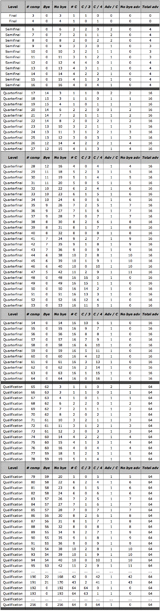
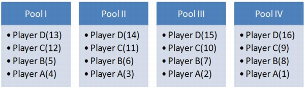
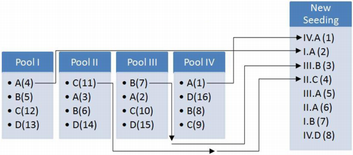

Article V - Footbag Freestyle
Outline of Contents
- 502.03 Protection from Elements
- 502.04 Spectator and Competitor Safety
- 505.02 Formula-Based Judging System
- Figure 9: Formula-Based Score Cards
- 505.03 Olympic-Style Judging System
- 505.04 Ranked-Component Judging System
- Figure 10: Ranked-Component Judging Worksheets
- 506.05 Videotape Verification
- 507.04 Tournament Procedures
- Figure 11: Circle Contest "Road Map"
- 508.05 Judging Assignments
- 508.07 Round-to-Round Seeding
- Figure 12(a): Initial Seeding
- Figure 12(b): Next-Round Seeding
The ultimate interpretation of the letter and spirit of the following rules shall be the responsibility of the tournament director and/or the head judge of the event.
502.01. Playing Area
The playing area for all choreographed freestyle events should be a circle approximately 12 meters (40 feet) in diameter. For all other events, such as circle contest and timed technical variety competition, the circle may be 6 meters (20 feet) in diameter. The playing area must also have sufficient overhead clearance of at least 6 meters (20 feet).
502.02. Surface
The playing area must be a level, flat surface (e.g., concrete, asphalt, carpeted floor, or non-slip wood floor) that is free of obstructions and holes, and that affords reasonable player safety. Surfaces must afford good traction so that players do not slip on the floor when performing freestyle moves. If the underlying floor is slippery (such as a waxed gym floor), the tournament director must place a carpet or other non-slip surface over the entirety of the playing area. Players must be given an opportunity to warm up on and get used to the playing surface, immediately prior to the beginning of their pool or round, in case the surface is different than the sideline surface.
502.03. Protection from Elements
A well-lit, indoor playing area is recommended, as it affords the best protection from natural elements such as rain, wind, and poor lighting. However, when such indoor venue is not possible, the tournament director shall make best efforts to provide protection from wind and rain during the competition. Tents, canopies, and/or wind blocks are recommended for outdoor play, when possible. Outdoor events that might take place in dark conditions (such as late-afternoon, dusk, or night-time) must have sufficient lighting to provide excellent visibility for players, judges, and spectators during competition.
502.04. Spectator and Competitor Safety
The playing area should be well-marked with ropes or other means to ensure the safety of the spectators and to prevent interference with the routines. If the playing area is on a raised stage, bright tape and/or ropes must line the edge of the stage, and/or other reasonable measures should be taken to ensure players do not accidentally fall from the stage.
503.01. Footbags
Players may use one or more footbags which must fall within the specifications set forth in Article 1, Section 107.01. If more than one footbag is used, the footbags need not be similar or identical. Tournament officials, including judges, have the right to inspect players' footbags immediately before or after they compete, in order to determine the characteristics of the footbag.
503.02. Uniforms
Uniforms are recommended for best presentation of freestyle competition, especially for singles and doubles choreographed routines. While uniforms are not required in the rules, a tournament director may choose to require them for specific events, such as televised finals.
503.03. Audio Equipment
For events that include music, audio equipment shall be provided with the ability to replay recorded music at a sufficient decibel range to enable the players, judges and spectators to comfortably hear the music.
503.04. Live Music
For choreographed routines, players are allowed to play to live accompaniment as long as all judges are aware that the accompaniment is live before the routine starts.
503.05. Aids and Props
For choreographed routines, players may include various aids or props in their routines. However, they may only do so if these aids or props do not pose any possibility of danger or harm to any players, judges or spectators. These aids and props should not be a substantial part of the routine, and must be approved by the tournament director, who shall have absolute discretion to deny inclusion.
In every freestyle competition outlined in this Article, there is a need to measure the relative difficulty of freestyle moves and/or runs performed by the players. For the purposes of these competitive disciplines, there is an assigned point value for each known move, and a simple basis for determining the points of each move, as detailed below, and some well-defined concepts that can be used in determining overall difficulty in freestyle competition. Please note that this is an evolving sport, and these metrics may not account for all cases; they are merely guidelines, though some events might base objective scoring on one or more of these metrics as they are described below.
504.01. Moves
A "move" is the combination of elements that begin from the "set" (when the footbag first begins its parabolic motion through the air) and end in either a delay or a kick (at the end of the parabolic motion). Within a single move, elements can be thought of as being divided into components that map to the time at which the elements occur:
A.
Set: The set is the time at which the footbag begins its parabolic motion at the start of a move.
B.
Uptime component(s): Uptime components, if present, are elements of a move that are executed while the footbag is still travelling upwards along its parabolic trajectory. When uptime components are present, they are often referred to as "sets" as well.
C.
Midtime component(s): Midtime components, if present, are elements of a move that are executed while the footbag is near the top of its parabolic trajectory, i.e., when the footbag is suspended in air for a brief period of time.
D.
Downtime component(s): Downtime components, if present, are elements of a move that are executed while the footbag is falling.
E.
Ending component(s): Ending components are the final elements of a move that complete the move and potentially begin the set for the next, linked move. Ending components are usually delays or kicks, but may also include carries (e.g., pendulum, refraction, or rake). The simplest add-value moves, such as clipper delay, have no other components except the ending components (e.g., clipper delay is a cross-body delay, with no other components in categories A-D).
504.02. Adds
Difficulty points associated with individual freestyle moves are called "adds" (short for "additions", meaning additional levels of difficulty beyond the most basic kicks). All freestyle moves have a well-defined add value (a whole number from 0 to 9, with 0 being basic kicks, and 9 being extremely difficult moves due to the number of elements required to execute it). Adds are calculated for moves by taking the sum of all the additional elements of difficulty ("add categories") inherent in the move, as listed below. Some elements may be present multiple times in a single move, in which case the add value for that move is counted accordingly. The add value for each move is listed on the official freestyle move list, maintained by IFPA; it is not expected that regular players or judges should calculate the add values themselves. (Since the difficulty analysis of freestyle moves is constantly evolving, this rationale for point calculation is mostly included here for historical reasons to help the reader understand the theory, terms, and concepts that underly these point values.)
A.
Dexterity Adds: A dexterity add ("dex" for short) is an element within a move wherein leg dexterity is required to perform the move. There are four types of dexterity elements, and a single move may contain any or all of them, possibly multiple times within the same move:
1. Regular Dex: an additional element of difficulty when one of the player's legs or feet intersects the parabolic path of the footbag in flight, making the move more difficult because of the obstacle the player imposes using a leg or foot (e.g., "mirage", "legover", "butterfly").
2. Full Dex: a type of dexterity where the leg must completely circle the footbag in flight to execute the move. For example, a same-leg repeating dexterity (double-dexterity) is considered to be at least one "full" dex. In addition, when a move cannot be executed without completely circling the footbag (e.g., "reverse swirl", "illusion", etc.), this is also considered to be a "full" dex. Full dexes do not affect the add-value of a move when done in isolation (e.g., "reverse swirl" is only considered to have a regular dex in terms of its add-value); however, when full dexes are repeated (even with different legs) within a move, they become part of the X-Dex element of difficulty, below.
3. X-Dex: an additional element of difficulty when a move contains at least two "full dexes" as described above (e.g., "atomic illusion", "double reverse-swirl", etc.). If a move has more than two full dexes, then there is an additional X-Dex element for each of the subsequent full dexes in the move (e.g., "atomic barroque" is considered to have two X-Dex elements). Today, none of the official add-values in competition includes the X-Dex element. The concept is described here only to document difficulty theory, not to indicate that it must be considered in competition.
4. Carry Dex: when the player carries the footbag around the support leg (e.g., "wrap") or carries the footbag along a specific, directed trajectory (e.g., "pendulum", "rake"). This carry is considered the ending delay of the move, so any elements performed between the set for the move and this carry dex, as well as the delay that began the carry, are all added together to yield the total add value for the move. (Any element of difficulty performed after the carry is by definition part of the next move.)
B.
Body Adds: A body add is an element within a move that requires extra body motions to execute the move. The following are the most common body elements:
1. Spins: other elements done after a half or full rotation of the player's body.
2. Flyers: basic kicks or other elements done while the player's body is in the air.
3. Symposium Dexterities: dexterity elements done with the same leg that supports the player's weight both before and after the dexterity. When these dexterities occur, the body element required to execute them is considered an additional level of difficulty in addition to the dexterity itself.
4. Paradox Dexterities: dexterity elements done with a set on one side, where the player must immediately switch their body position to the opposite side to complete the dexterity (as if the set had been made with the other leg, essentially). When these dexterities occur, the body element required to execute them is considered an additional level of difficulty in addition to the dexterity itself.
C.
Cross-Body Adds: A cross-body add is an element within a move wherein the player's legs are crossed while performing any other element of difficulty, i.e., by reaching behind the support leg with the kicking or catching leg to do some part of a move. The most common cross-body element is in "clipper" delays.
D.
Unusual-Surface Adds: An unusual-surface add involves the use of any non-basic kicking surface on the legs and feet (i.e., any surface other than the normal inside, outside, toe, and knee surfaces), to end a move. Contacting or delaying the footbag with any foreign object (e.g., catching the footbag on the rim of a hat, pulling the shirt away from the body to delay the footbag and pop it back up, striking the footbag with a prop, etc.) is not considered to have unusual surface element, and most certainly is not considered to be a delay. There are two types of unusual surface elements:
1. Lower-Body: kicking, delaying, or popping the footbag using surfaces such as the sole, the heel, the calf, the shin, the tip of the toe, etc. Note that lower-body unusual surface delays also have a delay element. For example, a sole kick is 1 add (unusual surface), whereas a sole delay is 2 adds (unusual surface, delay).
2. Upper-Body: rolls, pops, and delays resulting in an intentional movement that causes the footbag to contact the upper body (or any non-kicking surface not listed above). Note that each of these is counted as an unusual surface add, but never as a delay add (since they do not involve the legs or feet). For example, a neck catch has a total add value of 1 add, which is an unusual-surface add; there is no delay add in a neck catch because the delay is not done with the legs or feet. Furthermore, any contact with the upper body ends the previous move (as would a delay or kick).
E.
Delay Adds: A delay add is the final element of a move, when the player stalls, traps, or otherwise holds the footbag (e.g., before setting it again) with any part of their lower body, as opposed to simply kicking or striking it. A delay is only considered to have this element if it is performed with the legs or feet (including the "lap"). A delay on any other surface of the body is considered an unusual-surface add, not a delay add.
F.
Cooperation Adds: A cooperation add ("co-op" for short) is an element only present in doubles freestyle, where doing a move with a partner can have additional elements of difficulty. There are three types of cooperation elements, which may occur more than once in a single move:
1. Mirroring/Synchro: when two players perform the same move (though possibly on the opposite side) in perfect synchrony.
2. Add-to-Add Passing: when a non-basic move is performed by one partner from a non-basic move set by the other partner.
3. Hooping: when any move is performed by one player while the other player is presenting an obstacle (such as a leg or foot). Note: hooping in and of itself is not a dexterity element, but is rather purely a co-op element. So, for example, a hooped clipper is 3 adds (co-op, cross-body, delay); while the hoop in this case is just like a dexterity, it is treated instead as a co-op, and should not be double-counted.
504.03. Linking
Linking is the act of setting an add-value move directly from the delay or kick that ended the previous add-value move. A sequence of linked moves is called a "string", whereas a sequence of strings is called a "run". These terms are further defined below.
1. Definition: A "string" is a series of linked add-value moves. A string begins with the first add-value move, and ends with either a controlled ending (e.g., a basic kick or a controlled and/or planned hand-catch), or a total loss of control (e.g., a drop). The very last add-value move in a string is only considered part of the string if it is followed by a controlled ending. (In other words, a drop at the end of a string does not result in a "seal" of the last move, and as such the last move before a drop is not counted as part of the string.)
2. Add-Value Limits: Strings may have a minimum add-value, where the string is considered to end with the first move that has an add-value less than the stated minimum (or in the other cases that end a string as listed above, whichever comes first). Below are the names of the most common add-value limits for strings, sometimes used in competition (e.g., open circle contest, 507, requires each run to be composed of "guiltless" strings after the first 3-add move is executed during the run):
a) Basic strings have a minimum add-value of 1.
b) "Tiltless" strings have a minimum add-value of 2.
c) "Guiltless" strings have a minimum add-value of 3.
d) "Tripless" strings have a minimum add-value of 4.
B.
Runs: A run is one or more strings, separated by any number of kicks, delays, drops, and hand-catches (in other words, any non-add-value elements between strings). For add-value-limited strings (e.g., "guiltless" strings), a move of an add-value lower than the minimum constitutes a part of the run, but not of the string that precedes it. From a technical perspective, an entire choreographed routine (505) is considered a run, and a single turn in a circle contest (507.2.7) is considered a run. Section 504.04, below, describes difficulty and variety analysis of runs, which is subsequently used throughout this Chapter.
504.04. Run Difficulty
While difficulty of individual moves is modeled by the "add" system (504.02, above), it is often necessary to measure the difficulty of a run (504.03-B) of moves during competition. The following are some basic concepts that apply to evaluating overall technical difficulty of runs as they are executed in all of the competitive disciplines within this Chapter:
A.
Uniques: Within a run, the term "uniques" refers to the number of distinct moves that have been hit during the run. Uniques are thus a measure of the variety of moves in the run. Moves are unique only the very first time they are performed during a given run; repeated moves are not counted as unique after the first time they are hit (on the same side of the body). Two otherwise identical moves are considered unique when performed on opposite sides (e.g., "left mirage" is unique as compared to "right mirage", and thus count as 2 uniques when both are performed in a run) -- so, for example, repeating butterflies count only as two uniques total, regardless of how many times the player repeats them subsequently. Additionally, two moves with different sets are also considered unique, even though from the add-system perspective, they have the same exact difficulty description. Moves with different uptime components (also called "sets") are without a doubt unique (e.g., "blur" vs. "smear").
B.
Contacts: Contact are defined as the "total number of moves attempted or completed within a run". Any time a player sets the footbag and attempts a move with an add-value greater than zero, a contact is counted -- whether the player completes the move successfully or not. This is similar to uniques, but includes all repeated moves as well as incomplete moves (e.g., attempted moves resulting in a drop or saving hand-catch).
C.
Add-to-Contact Ratio: The add-to-contact ratio can be thought of as the "average difficulty of moves performed in a run". Since contacts includes moves attempted but not necessarily completed, this ratio is biased to penalize players for taking risk by attempting moves they do not complete. Not all disciplines in freestyle footbag consider this ratio, but it may be a useful statistic for example when evaluating the density of a run (see 504.06 Run Density, below). Note that non-add-value moves (such as kicks) are not included in this computation; only moves that have an add-value of 1 or more are used.
504.05. Run Variety
Run Variety is a measure of the breadth of a player's mastery of different types of moves, as executed in a run. As with execution and density below, run variety is difficult to measure entirely objectively, and usually requires a substantial amount of expertise to analyze, and is usually only meant to be analyzed by a certified judge (e.g., in circle contest or choreographed routines). The general concept of run variety usually takes the following attributes into account:
A.
Sidedness: The term "sidedness" refers to the ability of the player to execute the same moves on both sides of the body -- e.g., using the left and right legs equally. For example, a player who executes a butterfly by setting from the right toe and catching with the left clipper, who subsequently executes the same butterfly setting from the left toe and catching with the right clipper, is considered "even-sided" for butterfly. When comparing two players doing exactly the same moves in their runs, the player who does the most moves on both sides of the body is considered to have the best variety in terms of sidedness.
B.
Unique Moves: A very simplistic measure of run variety is simply the number of distinct moves (considering sidedness) within a run, as mentioned in 504.04-A Uniques. For some competitive events, especially at the novice and intermediate levels of competition, this may suffice in calculating relative run variety between players. However, at the more advanced levels of competition, this is often too simplistic, as it may mistake depth within a certain category of move for breadth. For example, if one player does thirty different toe-set moves, and another player does only twenty moves, but varies them between toes and clippers, a judge may conclude the second player was more varied, even if the raw number of distinct moves executed by the first player was greater. For this reason, the third attribute, "unique components", below, better describes run variety.
C.
Types of Moves: The best metrics of variety require a more detailed analysis of the different types of moves. Unfortunately, there is not a simple way to segment all possible moves into a small number of types. But there are at least two (if not more) general ways to break moves down into their families or types, for doing variety analysis:
1. Unique Components: The total number of unique components (504.01-A-E) of moves in a run can be a useful metric of variety. For example, one player may demonstrate more unique uptime components ("sets") than another player during a run, or one player may execute a much broader repertoire of downtime components than his competitor. In such cases, the players can be differentiated in terms of the unique components they perform relative to each other. Measuring unique components can be quite complicated, as enumerating all types of components and exhaustively categorizing each move executed vis-a-vis these components can be intractable. So, unique components in a run are often measured entirely subjectively by a certified judge who keeps track of just a few aspects of the variety of components used, such as unique uptime sets and unique downtime moves, as a substitute for a complete analysis. Such subjective judging (even when facilitated by some metrics to aid in the analysis) requires experienced, qualified judges. If such judges are not available, tournament organizers are encouraged to use simplified judging systems, to use the add-category-based estimation technique below, or to not offer events that emphasize technical variety.
2. Unique Add Categories: One method of estimating unique components is to simply count the number of unique add-categories (504.02-A-F) during a run. The result is five (or six in doubles) counts, one for each of the add categories, indicating the number of moves executed in a run that was represented by that add category. Since the add system uses a simplified component system to represent difficulty of individual moves, relying on the add categories is only a very rough way to estimate variety. Currently, only 505.02 Formula-Based Judging System uses this estimation method in scoring variety for a routine.
504.06. Run Density
Run density is a measure of the overall link difficulty within a player's run, which can roughly be characterized as the distribution of both difficult moves and difficult links within the run. Run density therefore accounts for both run difficulty (504.04 above) and the difficulty related to the distribution of moves as they are linked together during the run. As with variety above and execution below, density is often quite difficult to measure purely objectively.
A.
Definition: In the abstract, run density is the overall "link difficulty" associated with all moves in a run. Link difficulty is essentially the difficulty of setting a move (including its uptime components and body positioning) from the downtime component(s) of the previous move. By definition, the more difficult the move, the more difficult both setting into and out of the move is. However, some moves are especially difficult to link, due to the relative work required by the player to link the downtime/ending component of a move into the set/uptime component of the next move.
B.
Measurement: Unfortunately, measuring density is not straightforward, as it requires a substantial amount of information. (For example, a difficulty metric would need to be developed to account for each possible link, and all links would need to be recorded and counted to measure the density of each run.) It is thus impractical to compute an accurate run density score in real time. Therefore, density is often measured entirely subjectively by expert judges who attempt to compare all players in a pool against each other in terms of their run density, but who do not necessarily assign a specific score. For example, in open circle contest (507), players who link every move in their run without having to resort to the easier 3-add moves such as butterfly, osis, and paradox mirage, are considered to have higher run density than players who do potentially harder moves during the run, but using these easier 3-add moves in between the harder moves. (Note that, strictly speaking, the term "density" is a misnomer, since run density is meant to measure the overall link difficulty which must also take into account the number of moves executed in a run, as well as the difficulty of each move in the run.)
C.
Estimation Method: To estimate the difference in run density between players in a pool, a qualified judge can count the number of difficult moves as well as the number of "easy" vs. "difficult" links in each run. The highest density is that of a run with the most difficult moves that also has the most difficult links. By default, a run with only "guiltless strings" will be lower density than a run with "tripless strings", so another simple way to estimate density is to consider the number of tripless strings each player has in their run (in addition to considering the overall difficulty of the run), as well as the length of those tripless strings.
D.
Usage in Competition: Run density is only used today in circle contest, specifically for the "density phase" (507.3.3-B). In circle contest, after each density phase, each judge assigns a score of 10 to the player they believe has the best run density. Each judge then assigns each other player in the pool a score between 0 and 9 that indicates their density relative to the top player's density for that phase, in that judge's opinion. Since no well-defined methodology exists for assigning these scores, it is strongly recommended that only qualified judges be used for open circle contest. If such judges are not available, organizers are encouraged to omit density from the circle contest at that event (see 507 for more detail about the format of circle contest).
504.07. Run Execution
Another important concept in difficulty analysis is "execution" -- that is, how well a player executes the moves and links in a run. Execution is defined in terms of the following elements:
A.
Drops: A drop is whenever a player exhibits a total loss of control of the footbag. Usually, this is the result of an actual (unintentional) drop, but may also include an un-planned hand catch. Regardless of the reason, such loss of control is considered to have a substantial impact on the technical execution of a run. Some judging systems might count drops as automatic deductions, whereas others might allow judges to decide how important drops were to the overall execution.
B.
Control: Control is defined as the relative ability of the player(s), as compared to other players, to control the footbag during their run. Control is not simply the absence of drops, but overall consistency. A player who is sloppy, shaky, or who has to stop to regain their balance often during the run demonstrates less control than a player who flows from move to move with ease and with few or no sloppy sets. In some judging systems, a "slop" (i.e., a set that hits the player's upper body accidentally, or a fumble that almost results in a drop) may be treated as an automatic deduction, whereas other systems might allow judges to decide how important control was to the overall execution.
C.
Form: This is the most subjective measure of execution, referring to the way in which the player(s) execute their moves relative to other players. For example, some players may have very consistent, effortless sets with "clean" dexterities, whereas other players often set too high or too low for a given move, catch the footbag lower on one side than on the other, etc. (The best form is the form that yields the best control and the least number of drops, so some judging systems may simply infer this from those elements. However, in a purely subjective judging system, this may be the most useful element and drops/slops themselves may be de-emphasized.)
A.
Play: Choreographed freestyle routines are performed individually (singles) or in pairs (doubles). Routines are presented to music and judged on the basis of four criteria, below. The best singles routines will exhibit mastery over all four of these areas, will evenly balance presentation with technical composition, and will evenly balance difficulty with execution. The best doubles routines will do the same, but with an additional requirement of clearly demonstrating cooperative play.
1. Presentation: The artistic and/or overall presentation of the routine, with a balance of the following five required aspects of presentation. Note that these are very subjective concepts, and are not entirely distinct from one another (e.g., music and movement may overlap with distribution and linking). The best routine in terms of presentation will maximize all five of these aspects, below.
a) Music and Movement: the relationship between the player(s) and the music, including the timing of moves and music, the rhythm of the routine, the start and finish of the routine, and the relationship of the structure of the routine to the structure of the music. This can be thought of as the artistic composition of the routine, analogous to technical variety.
b) Floor, Planes and Travel: the use of the floor area and the use of different planes (low, medium, and high moves and movements). This means a routine that takes advantage of the entire playing area is considered better than one where the player simply does repeated moves in one location.
c) General Form: the flow and confidence of the player(s) as they present their routine.
d) Distribution and Linking: the linking of moves together into combinations, and the distribution of moves among the composition categories. Note that while this is similar to technical density (504.06), this aspect of presentation refers to the way the player(s) have chosen to integrate their repertoire of moves into the routine for the purpose of presentation. (For example, using a dense sequence of "shuffle" moves during the crescendo, while using spins and flyers to perform a travelling sequence.)
e) Personality and Originality: the appeal of the player(s) to the audience, and/or their artistic impression on the audience or judges, generally incorporating some element of unique style and originality.
2. Composition: The composition of the routine in terms of the technical variety executed by the player(s), as described in 504.05 Run Variety. This criterion refers to the technical "breadth" of the player(s) -- how many different types of moves (from a purely technical perspective) are incorporated into the routine and successfully executed. Only moves that are completed are considered as to have been included in the routine's composition. See 504.05 for a detailed description of run variety and ways of measuring it.
a) Doubles Composition: In doubles competition, composition is considered for the pair, not for individuals. Example: a unique add-value move performed by one partner is a unique move for the pair -- if the other partner does the same move (on the same side of the body), it is not a second unique move. When the pair is performing cooperative moves, however, each unique combination of the 2-body, 4-legged freestyle pair is considered a unique move.
3. Difficulty: The amount of technical difficulty, relative to the amount of risk, the player(s) execute within their routine. This includes both Run Difficulty (504.04) and Run Density (504.06). For example, a player who links very difficult moves continuously throughout the routine (high "density", as described in 504.06 Run Density) will be considered to have substantially more difficulty than a player who keeps to a few difficult moves they can hit consistently linked together by much easier moves and/or basic kicks/delays. The following three measurements are generally used by judges to aid them in determining relative difficulty of choreographed routines -- see each judging system below for specifics. They are:
a) Add Count: the sum of the difficulty points, or "adds" (504.02), associated with each move completed during the routine. For example, a routine with 25 flying clippers, and no other moves, will have an add count of 50 adds. Depending on the judging system used, this count may or may not be taken into account in determination of difficulty.
b) Contacts: the total count of attempted non-basic kicks during the routine as defined in 504.04-B Contacts. Failed attempts (such as drops or hand-catches during point-value moves) are included in this total, so that players are penalized for attempting moves they do not complete. This count may be useful to judges in determining how much risk and/or how many moves the player(s) executed when comparing their routines to other players' routines.
c) Add-to-Contact Ratio: adds divided by contacts for the routine, as defined in 504.04-C Add-to-Contact Ratio. This can be a way to compare the average technical difficulty of one routine as executed to another. However, depending on the judging system used, this ratio may or may not be taken into account in the determination of difficulty.
4. Execution: The technical execution of the routine, taking into account general execution quality relative to a flawless technique. As defined in 504.07 Run Execution, players should consider the following three aspects of execution:
a) Drops: A total loss of control, as defined in 504.07-A Drops.
b) Control: The relative ability of the player(s), as compared to other players, to control the footbag during their routine, as defined in 504.07-B Control.
c) Form: The general manner and quality of execution, as defined in 504.07-C Form.
5. Cooperation: In doubles freestyle routines, pairs are additionally measured relative to their competition on the following five elements of cooperative play:
a) Equal Work: considers the balance of work done between the two players.
b) Unity & Cooperation: considers the use of "co-ops", or doubles moves, as opposed to individual moves.
c) Pass Difficulty: considers the difficulty of passes between players involving non-basic moves done by the passer and non-basic moves done by the receiver.
d) Pass Variety: considers the variety of passes and exchanges made, including sidedness.
e) Formations: considers the variety of formations in the routine (e.g., facing/mirroring, side-by-side play, opposite-sided play, back-to-back play, pairwise rotation, etc.).
B.
Timing of Performances:
1. Time Limits: Singles routines are allowed a maximum of 2 minutes. Doubles routines are allowed a maximum of 3 minutes. Minimum times may be set by the tournament director, though open routines may not be less than 90 seconds, and open doubles routines may not be less than 2 minutes and 15 seconds. If no minimum times are set in advance, no player(s) shall be disqualified for performing under the time limit; however, judges should take into consideration when routines are substantially shorter than others. If minimum times are set, players will be disqualified if they end their routines before the minimum time limit.
2. Start of Timer: The timer for a player's performance will start with the first overt act of performance (not with the first sound of the music). Players are allowed warm-up kicks when first taking the stage, if not accompanied by any other act of presentation. However, any move other than a basic kick, whether the music has begun or not, will be considered overt acts of performance and will thus start the timer. Any obvious motion of presentation (such as dancing, artful movement through the playing area, acting, etc.) will start the timer, whether the music has started or not.
C.
Music: Music is a core element of choreographed freestyle routines. Players are required to provide electronic recordings of their routine music to the tournament staff in advance of their competition, and such music must be correctly edited for length, volume, and quality. It is recommended that music have a 3- to 5-second leader so that players are ready when the music begins, and that the music not immediately repeat or play unrelated music at the end of the routine.
1. Start of Music: Upon entering the playing area, the player(s) must make a clear hand gesture to signal the tournament staff to start their music, to ensure the player(s) are ready. Tournament staff should not start the music without player acknowledgment that they are ready.
2. End of Music: Music for a routine shall continue playing until the routine is clearly finished, as indicated by a bow or other obvious final movement of presentation, unless the music has been edited to end at the time the competitor(s) has chosen. In other words, the tournament staff shall not abruptly cut off any player's music. After the maximum time as described in B above, if the music is still playing, the competitor(s) might continue to play. In this case, the music may be faded slowly to indicate the time has been reached, but must not be cut entirely until the player has clearly finished their routine. (This is due to the possibility of a timer error, in which case players might be entitled to perform their ending without the abrupt interruption of the music. The ultimate decision about whether a player's time was up or not rests in the hands of the judges.)
D.
Official Judging Systems: The tournament director may choose among three official judging systems: formula-based (505.02), Olympic-style (505.03), and ranked-component (505.04) judging. Depending on the number of available judges and the level of experience of the judges, some may fit one format better than others. However, in theory, all three systems should yield the same results if correctly applied -- that is to say, players should not have to know which judging system is being used in preparing their routines, as long as they base their routines on the rules of play in 505.01-A above. These judging systems, described below, all attempt to rank players relative to the rules of play as outlined in the above section, 505.01-A. Any biases that may be injected by one of the judging systems below is accidental; all three systems are intended to yield the same results.
E.
Alternative Judging Systems: Other systems not described here may also be used at tournament director discretion, as long as best efforts are made to follow the spirit of these rules and to ensure competent, unbiased judging. In other words, regardless of the judging system used, the same results should be obtained wherever possible. Any judging system used should thus measure the players' routines on the basis of the players' abilities to balance the difficulty, composition, execution, and presentation of their routines, as described in 505.01-A above. Finally, any alternative judging system must be communicated to all players well in advance of the actual competition (e.g., during or before pre-registration), including as much detail as possible. This pre-communication of deviations from the official rules is a strict requirement of IFPA sanctioning.
505.02. Formula-Based Judging System
A.
Overview: This system offers the most objective judging criteria and result-calculation method of the available systems, while still offering a good degree of subjectivity. However, a large number of judges and at least one computer are required to determine the results, and this judging system may take an extended amount of time to administer. Whereas other systems may inadvertently allow bias, this system is based on a formula that limits the impact of any individual criterion, so that a player's performance within a single criterion cannot unduly impact (positively or negatively) the judges' evaluation of a player's routine vis-a-vis the other criteria. The spirit of this system is to capture the same results as either of the other two systems -- evaluating competitors on their ability to combine the greatest technical difficulty, variety, execution, and presentation in their routines, as described in 505.01-A, above.
B.
Judges: A panel of judges evaluates each routine. The judges are composed of qualified staff judges or of other competitors, either those from other pools, or those who have been eliminated during previous rounds of play. The tournament director will draw up the judging assignments based on the available judges, and all judges are encouraged to cooperate so the event runs quickly. The judges are organized as follows:
1. Drop Counter: (1 judge.) Responsible for counting drops as defined in 505.01-A-4a.
2. Contacts Counter: (1 judge, possibly the same as drop counter). Each contact made as part of a "move" is counted, as described in 501.04-A-3b. Basic kicks are not counted by the contacts counter. The point of counting add contacts is to compute a ratio of adds to contacts, which is used to determine the degree of difficulty of the routine. The higher the ratio, the more difficult the moves made by the player.
3. Add Counter: (1-2 judges.) The add counter counts the total number of difficulty points ("adds") of all moves performed during the routine, as described in 505.01-A-3a. Moves that are not completed are not counted. Note that the add counter must count the adds for each move completed during the routine, even when repeated. This may be implemented using an Add Caller (508.06-A) and an Add Recorder (508.06-B) as defined in 508.06 Add Counting.
4. Presentation Judges: (3-5 judges.) The presentation judges evaluate the competitors in the five categories described in 505.01-A-1.
5. Composition Judges: (3-5 judges.) Composition is described in 505.01-A-2. In the formula-based judging system, composition is measured using the Unique Add Categories variety-estimation method, as detailed in 504.05-C-2. As such, there is a separate judge for each of the add categories: delay, dexterity, body, cross-body, unusual surface, and (for doubles) co-op. Each judge evaluates the technical variety of a routine for a specific add category. This is done by simply counting the number of unique move in that add category that are successfully executed. (Attempted moves that are not completed do not count.) For example, the first time a player executes left paradox mirage, the body, dexterity, and delay judges will all count that move either by making a tick-mark on their judging card, or by using a counting device. Then, the first time a player executes a right paradox mirage on the right side, those same judges will all count that move a second time (since left and right sides are considered unique). However, these judges will ignore any subsequent paradox mirages since repeating a move after doing it on both sides does not add to the player's demonstration of variety. At the end of the routine, each composition judge wlil score 1/10th (0.1) point for each unique move in the add category they are judging. (See Scoring Players, below.)
a) Doubles Composition Scoring: As described in 505.01-A-2a Doubles Composition, composition scores are for the pair in doubles, not for each individual. So, for example, a unique add-value move performed by one partner is a unique move for the pair -- if the other partner does the same move (on the same side of the body), it is not a second unique move. When the pair is performing cooperative moves (described in 504.02-F Cooperation Adds), however, each unique combination of the 2-body, 4-legged freestyle pair is considered a unique move. Additionally, there is a sixth composition judge who is counting each unique cooperative move, i.e., unique moves that contain one of the 3 types of cooperative adds as described in 504.02-F.
6. Doubles Judges: (3-5 judges, for doubles routines only.) The doubles judges evaluate the doubles routines in the 5 cooperation areas outlined in 505.01-A.5: equal work, unity & cooperation, pass difficulty, pass variety, and formations.
7. Head Judge: The head judge's duties are as follows:
a) The head judge monitors the overall judging process, ensuring that all other judges are present and ready to score each routine.
b) The head judge watches all routines in the pool.
c) The head judge ensures that the presentation and doubles judges are within their allowed range (see 505.04-C and -E), and provides arbitration and possibly score rejection or modification if judges are having difficulty giving scores that are within the allowed range.
d) The head judge is the official point of contact for players who want to follow up on their scores from that round, and/or to raise a dispute. (Note: players are not to dispute scores with, or otherwise communicate with the other judges during the round.)
8. Multiple Assignments: At the tournament director's discretion -- in order to reduce the number of judges required -- a judge can take two judging assignments (e.g., one composition category and one choreography scoring sheet). The head judge can take one regular judging assignment.
C.
Scoring Players: Each routine is assigned a final score composed of 4 parts in singles, and 5 parts in doubles (see 505.02-D Tabulating Scores, below). Scoring for each of these individual parts is detailed below:
1. Execution Score: 5 points maximum. This score corresponds to the execution component described in 505.01-A.4. In the formula-based system, this is a deduction-based score, wherein each player is initially given 5 points. Each time a player drops, 1/4 point (0.25) is deducted from their execution score. A saving hand-catch counts as one drop. A routine with 20 drops or more receives an execution score of 0, and a dropless routine gets 5 points. Aside from drops, no other aspects of execution as described in 505.01-A.4 are considered in the formula-based system; it is purely objective. In some rare cases, two judges may have different opinions of whether a particular hand-catch was a "saving" hand-catch, whether a particular drop should be counted, etc. In these cases, judges must use their best discretion and be consistent in scoring all players within a pool using the same interpretation of execution.
2. Difficulty Score: 5 points maximum, corresponding to the difficulty component as described in 505.01-A.2, and obtained using the following formula. For example, a singles routine with 150 adds and 49 contacts would have a difficulty score of (150 X 0.003) + (150 / 49) = 3.51. As another example, a singles routine with 250 adds and 70 contacts would have a difficulty score of (250 X 0.003) + (250 / 70) = 4.32.
a) Difficulty = (Adds X Multiplier) + (Adds / Contacts)
b) Multiplier = 0.003 for singles.
c) Multiplier = 0.002 for doubles.
3. Presentation Score: 10 points maximum. Each judge gives up to 2 points in each of the 5 categories described in section 505.01-A.1, for a total of 10 points. A player's final presentation score is obtained by averaging the scores of all the presentation judges. All presentation judges must agree within 1.5 points on the score for each player or team. For example, if the highest score for a player is 7.3, then the lowest score for a player must be at least 5.8. The head judge is responsible for having presentation judges give scores that agree within the allowed scoring range.
4. Composition Score: 10 points maximum in singles, 12 points maximum in doubles. The results of all composition judges are summed to obtain a player's composition score. Traditionally, a composition judge evaluates only 1 category. Each composition judge assignes a score of 1/10th (0.1) point for each unique move that contains each element of composition as described in 505.02-B-5. The elements of composition are not weighted equally. Below are the limits on each composition category:
a) The "delay" element is worth up to 3 points. This means that any moves performed after the 30th delay move are no longer counted towards the delay element, as all required moves have been completed for that element, and any additional delay moves will not count be counted as delays for the purpose of variety (though they will likely still be unique in one or more other composition categories).
b) The "dexterity", "cross-body", and "body" elements are each worth up to 2 points. This means that 20 unique moves in any of these composition categories will satisfy that category, so any additional moves with that element will not be counted as unique moves for that category (though they may still be unique in another category).
c) The "unusual surface" element is worth up to 1 point. This means that only 10 unusual surface moves are required, after which any additional unusual surface moves are not counted as unique unusual surface moves (though they may still be unique in another category).
d) The "co-op" element is worth up to 2 points (only in doubles). This means that 20 unique moves in the co-op category will satisfy the category, so any additional co-op moves with that element will not be counted as unique co-op moves for the purpose of variety (though they may still be unique in another category).
5. Cooperation Score (doubles only): 10 points maximum. Each judge gives up to 2 points in each of the 5 categories described in 501.04-A-5, for a total of 10 points. A team's final doubles score is obtained by averaging the scores of all the doubles judges. All doubles judges must agree within 2 points on the score for each team. In the final round, agreement must be within 1.5 points. The head judge is responsible for having doubles judges give scores that agree within the allowed scoring range.
D.
Tabulating Scores: The total score is calculated by simply summing the four (or five, in doubles) individual scores above for each player. Because each score above has a maximum, this results in a total score that reflects the players' ability to balance execution, difficulty, presentation, composition, and (for doubles) cooperation, as described in 505.01-A. Players are then ranked from highest total score to lowest. In other words, the player with the highest total score receives 1st place, the player with the next-highest total score receives 2nd place, etc. In the very unlikely event of an exact tie (i.e., two players have exactly the same score down to the 2nd decimal place), the tie must be resolved using one of the methods described in 508.04 Resolving Ties. The formula for total score for singles and doubles are listed below, with maximum scores for each individual score in parentheses:
1. Singles: Total score (30 points maximum) = Execution score (5) + Difficulty score (5) + Presentation score (10) + Composition score (10).
2. Doubles: Total score (42 points maximum) = Execution score (5) + Difficulty score (5) + Presentation score (10) + Composition score (12) + Cooperation score (10).
-
Figure 9: Formula-Based Score Cards
E.
Software Support: Software may be available to facilitate tabulating freestyle results using the formula-based judging system. Inquire with the International Footbag Players' Association (IFPA) for more information. (Some judging sheets and spreadsheets for simple calculation are available at
http://www.footbag.org/reference/-/Freestyle_Judging_Sheets.)
505.03. Olympic-Style Judging System
A.
Overview: This is a purely subjective system wherein expert, IFPA-certified judges who understand the rules of play, as described in 505.01-A, evaluate each routine relative to a theoretically "perfect" routine, and ultimately rank the routines accordingly. While this system affords great simplicity in implementation compared to other systems, the drawback is that it must be staffed with IFPA-certified judges, to which not all tournaments might have access. (Because it is so simple, it is also possible for tournaments to have "real-time" results, since scoring and tabulation are so straightforward.) The goal of this system, as with other judging systems, is to rank choreographed freestyle routines as they are presented on the basis of the players' ability to balance technical difficult, presentation, technical variety, and execution. The result for this system should be the same as for other systems, but the way in which these are achieved puts more of a focus on the primary components required to show that balance: "artistic impression" (AI) and "technical merit" (TM); these are further explained below.
B.
Judges: A panel of qualified judges evaluates each routine entirely subjectively. Thus, all judges must be IFPA-certified judging staff with a sophisticated understanding of the current state of the art of choreographed freestyle competition. Inquire with IFPA about how to certify judges, how to identify certified judges, or how to become certified. At smaller tournaments either without IFPA sanctioning or where insufficient certified judges can be found, uncertified judges may be used. However, such results will not be used in ranking for future IFPA-sanctioned tournaments. When a qualified judging instructor is present at a competition, new judges may be certified in a "judging clinic" if offered by the instructor in advance of the first round of competition.
1. Number of Judges: The judging panel shall be made up of 4 to 6 judges, each of whom judges the exact same criteria as outlined in section C below.
2. Judging Assistants: The judging panel should be assisted by up to four assistants who provide information to assist the judges in their analysis:
a) Runner: At the end of each routine, the runner waits behind the judges and records their scores, ensuring there are no errors, before giving that information to the scores desk. In addition, the runner may immediately relay statistics to the judges if required -- such as length of routine, drops, contacts, and add-to-contact ratio -- before the judges begin writing their scores. Note: one or all of the responsibilities of the runner may be performed instead by a software program, e.g., in the case that all judges enter their scores electronically.
b) Add Caller: an add caller as described in 508.06-A.
c) Add Recorder: an add recorder as described in 508.06-B.
d) Contact and Drop Counter(s): this can be one or two judges. The contact counter counts the number of attempted add-value moves in the routine, as defined in 504.04-B Contacts. The drop counter counts the number of drops, as defined in 504.07-A Drops.
C.
Scoring Players: Judges evaluate routines as they are performed based on criteria detailed in 505.01-A above, and then score players as described herein. Because the nature of this judging system is entirely subjective, judges are dissuaded from taking too many notes; it is preferred they focus on the routines and allow the judging assistants to provide statistics and other information before recording their scores. At the end of each routine, each judge records a score for each of the criteria, as applicable: artistic impression (AI) score, technical merit (TM) score, and in doubles freestyle, cooperation (CO). All scores are on a scale of 0 to 6, with a granularity of tenths of a point for each score. After the pool is over, each judge should write their final rank (based on the scores they assigned) for each player in each of the three criteria. These criteria are further described below:
1. Artistic Impression (AI): A measure of presentation, as described in 505.01-A.1, with the artistic impact of variety considered, and with execution (505.01-A.4) strongly considered. The following guidelines should aid in the assignment of scores for Artistic Impression:
a) 0.0 - 0.9: very poor (player does not demonstrate artistry)
b) 1.0 - 1.9: poor (player demonstrates only a very small amount of artistry)
c) 2.0 - 2.9: weak (player attempts performance, but lacks much skill)
d) 3.0 - 3.9: reasonable (player demonstrates some good artistry, but is not consistent)
e) 4.0 - 4.9: good (player clearly demonstrates artistic ability throughout)
f) 5.0 - 5.9: very good (player consistently demonstrates artistic mastery)
g) 6.0: perfect (player demonstrates flawless artistic mastery)
2. Technical Merit (TM): A measure of technical difficulty, as described in 505.01-A.3, with technical variety (505.01-A.2) strongly considered, and with execution considered. The following guidelines should aid in the assignment of scores for Technical Merit:
a) 0.0 - 0.9: very poor (player does not demonstrate technical ability)
b) 1.0 - 1.9: poor (player demonstrates some very basic technical skill, but not much)
c) 2.0 - 2.9: weak (player demonstrates intermediate technical skill, but is very limited)
d) 3.0 - 3.9: reasonable (player executes some move well, but lacks variety or execution)
e) 4.0 - 4.9: good (player clearly demonstrates varied technical ability throughout)
f) 5.0 - 5.9: very good (player consistently demonstrates technical mastery)
g) 6.0: perfect (player demonstrates flawless technical mastery)
3. Cooperation (CO): (Doubles only.) A measure of cooperative play, as described in 505.01-A.5, with execution considered. The following guidelines should aid in the assignment of scores for Cooperation:
a) 0.0 - 0.9: very poor (players do not demonstrate cooperative play)
b) 1.0 - 1.9: poor (players may attempt some cooperative play, but not much)
c) 2.0 - 2.9: weak (players demonstrate some cooperative play, but are very limited)
d) 3.0 - 3.9: reasonable (players execute some cooperative elements very well, but lack other cooperative elements or have weak execution)
e) 4.0 - 4.9: good (players clearly demonstrate good cooperative play throughout)
f) 5.0 - 5.9: very good (players consistently demonstrate mastery of cooperative play)
g) 6.0: perfect (players demonstrate flawless mastery of cooperative play)
D.
Tabulating Scores: At the end of each pool, each judge should assign a final rank for each player in each of the two or three criteria, as applicable. Thus, each judge's results will include a final TM Rank, a final AI Rank, and (for doubles only) a final CO Rank for each player or pair. If these ranks are not written, they can be inferred from the scores given for each player or pair within each of these criteria. Ties are not permitted in the criteria-based final ranks, so judges must be asked to resolve ties within each criterion (AI Rank, TM Rank, and CO Rank if applicable), before tabulation may be performed. Finally, each judge's ranks in all criteria for each player or pair should be added together, giving the final score for each player or pair. The lowest total score takes 1st place, the second lowest score takes 2nd place, and so on. Ties can be quite common in this judging system, but may often be resolved using the maximum-places method (see 508.04 Resolving Ties).
505.04. Ranked-Component Judging System
A.
Overview: This is the simplest judging system to implement, and is recommended for smaller tournaments and/or when the players are not so closely matched in ability that a more formal analysis is required.
B.
Judges: A panel of judges evaluates each routine. The judges may be qualified judging staff, or may be composed of other competitors, either those from other pools, or those who have been eliminated during previous rounds of play. The tournament director will draw up the judging assignments based on the entered competitors, and players and/or judging staff are encouraged to cooperate so the event runs quickly. The judges are organized as follows:
1. Presentation: (3-5 judges.) Presentation judges will evaluate the competitors in the aspects of presentation described in 505.01-A(1).
2. Difficulty: (3-5 judges.) Difficulty judges will evaluate the competitors in the aspects of difficulty described in 505.01-A(3). If numeric data such as adds, contacts, and the add-to-contact ratio are required to help judges evaluate difficulty, add and contact counters may be provided as well. However, the objective of the ranked-component system is to avoid requiring too many judges, so it is recommended that judges evaluate difficulty based on their knowledge of the discipline and in a manner that considers only the relative difficulty of the routines presented.
3. Execution: (3-5 judges.) Execution judges will evaluate the competitors in aspects of technical execution, or deviation from a flawless technique, as described in 505.01-A.4. In order to evaluate competitors on this aspect, judges should keep track of the number of drops, and should observe the players' control and form throughout their routines, and compare and contrast them with each other.
C.
Scoring Players: Judges should give full, sincere attention to each routine being judged, ranking competitors relative to each other for the pool and factor being judged; with 1 being best, 2 being second best, etc (see fig. 10). Guidelines to follow are:
1. Read the explanation of the aspects of play you are expected to judge.
2. Keep appropriate notes about each routine on your worksheet. Use any method of note-taking you wish, but be consistent.
3. Focus only on the assigned evaluation factor.
4. Be aware of your potential biases, and evaluate competitors as fairly as possible.
5. Review notes and give full consideration to all routines after all competitors have finished.
-
Figure 10: Ranked-Component Judging Worksheets
D.
Tabulating Scores: Each judge's score (rank) for each routine should be added together. The lowest total score takes first place, the second lowest score takes second place, and so on. Ties should be resolved if possible (see 508.04 Resolving Ties).
A.
Playing Area: The playing area shall provide optimal conditions for technical freestyle play, while affording protection from the elements and safety for all involved, as described in 502 Field of Play. Because players will usually compete in rapid succession, all players in a pool may occupy the official playing area simultaneously; each player should move to the very center of the playing area when their name is called. Other players occupying the playing area should leave a safe distance between themselves and the current player, and should yield the playing area to the active player at all times during competition.
B.
Runs: Each player performs a run, as described in 504.03-B Runs, composed of one or more strings (504.03-A), for a maximum time period (defined below). Drops and loss of control do not end the player's run -- only the time limit ends a run.
C.
Start of Timer: Since players in shred competition are usually called to compete in rapid succession, no warm-up is allowed after the player is called to begin their run. Therefore, the very first add-value move will begin the time for the run.
D.
Time Limits: By default, the time limit for a run is 30 seconds in all divisions (hence the common name for this event, "Shred :30"). However, the tournament director may specify a different time limit (e.g., "Shred :45" would have a 45-second limit). The minimum allowable time limit is 20 seconds, and the maximum allowable time limit is 90 seconds. Once the time limit is defined by the tournament director within a given division, it must be the same for all rounds of competition within that division. For consistency in comparing results between multiple tournaments, a 30-second time limit is strongly recommended for all categories.
E.
Uniques Qualifier: The uniques qualifier is the minimum add-value for which moves are able to contribute to the Uniques count as described in 506.02-B-4 Uniques Counter. By default, the uniques qualifier is 3 adds for the open and open women's divisions, and 2 adds for all other divisions. However, the tournament director may specify an alternative uniques qualifier for a given division. The minimum allowable uniques qualifier is 1 (meaning only add-value moves may be considered in the Uniques count). Once the uniques qualifier has been defined within a given division, it must be the same for all rounds of competition within that division.
F.
End of Run: Each player's run shall end when the defined time limit (506.01-D) is reached. In some cases, a player may continue to play past the end of the time limit; however, judges may only count adds, uniques, and contacts for the moves executed during the official time.
A.
Qualification of Judges: As Shred is meant to be a purely technical event, judging is entirely objective. While even the most experienced judges may have differing perceptions of a given move's value (e.g., because of differences in viewing angle or interpretation/knowledge of the moves being executed), recognizing unique moves and counting adds require expert knowledge corresponding to the level of play. For that reason, judging is often performed by active players who are capable of interpreting unique moves and add values. The tournament director may draw on the players themselves to act as judges. While sometimes it is obvious to the trained eye without videotape verification who the winner is, it is recommended that videotape verification be implemented to ensure that each routine gets reviewed carefully. See 506.05 Videotape Verification for more details.
B.
Judging Roles (Counters): The following describe the different judging roles required for this event, and the number of judges for each role. Though video verification is an option, it is recommended to use live judging so that results are known immediately, and only revert to video verification when needed. In the case of video verification, different judges may be used, but the following judging roles must still be occupied by separate judges.
1. Adds: (2 judges.) The add-counter judges will count all add-values (as defined in 504.02) associated with the moves executed in a run. It is recommended to use the method outlined in 508.06 Add Counting for either live or video-based counting of adds. Using that method, one of the two judges would be the "caller", while the other would be the "recorder". If another method is used (such as using a computer, clicker, or simply counting aloud), it is recommended that both judges use the same method to count adds, possibly from different vantage points, and average the results.
2. Contacts: (1 judge.) The contact counter counts the total number of moves attempted during a player's run, as defined in 504.04-B Contacts.
3. Time Keeper: (1 judge.) The time keeper is responsible for starting the timer for each player's run as described in 506.01-C Start of Timer, and for notifying the judges and player when the time is up (as defined in 506.01-F End of Run). It is recommended that the time keeper (or an assistant) count down the final five seconds of each player's run aloud (e.g., using a public address system) so that players know when their run is almost over.
4. Uniques Counter: (1 or 2 judges.) The uniques counter is responsible for counting the total number of "qualifying unique" moves executed by a player during their run. Qualifying uniques are the subset of unique moves (as defined in 504.04-A Uniques) that have a specified minimum add-value, as described in 506.01-E Uniques Qualifier above. For example, if the uniques qualifier is 3, the uniques counter must only count unique 3-add moves or higher. Note that the add counter(s) will count all add-value moves; so, this qualifier only applies to uniques, not to add counts. When using two uniques counters, it is possible to divide the effort up by having one counter count lower add-value moves, and the other count higher add-value moves, in which case the final uniques score is the sum of both counters' scores. Alternatively, two counters may both count all qualifying uniques and average their scores to minimize errors in live judging.
506.03. Scoring Players
For each player, the judges' scores are recorded on an official score card, summarized below. In addition, two calculations are made (add-to-contact ratio and total score), as defined below.
A.
Adds: the total add count determined by the add-counter judges in 506.02-B-1.
B.
Contacts: the total contact count as determined by the contact counter in 506.02-B-2.
C.
Uniques: the total qualifying uniques as determined by the uniques counter(s).
D.
Add-to-Contact Ratio: calculated by dividing Adds by Contacts as detailed in 504.04-C.
E.
Total Score: (Add-to-Contact Ratio x Uniques) + Adds
506.04. Tabulating Scores
At the end of each round of competition, all players within a division are ranked according to their total score (506.03-E), in descending order. The player with the highest total score wins; the player with the second-highest score gets second place, etc. In the very unlikely event of a tie, players will tie for the lower place, and the next higher place will be skipped in calculating the remaining players' ranks (as described in 508.04-B Better-Place Tied Ranks).
506.05. Videotape Verification
The tournament director is responsible for determining whether live judging or videotape verification judging is necessary. It is recommended that if the tournament director chooses videotape verification, they make sure that a minimum of two camera angles are being recorded to ensure redundancy. This is in the case one camera malfunctions, or if there are obstructed views causing significant impairment to the judges.
506.06. Submitting Scores
Event directors will be responsible for keeping track of each player's scores, including adds, contacts, and uniques. Scores must include at a minimum, a breakdown of "unique moves," "contacts" and "adds" as set forth in 506.03 Scoring Players. When possible, a list of every move the player completed should be included. It is a requirement of IFPA Sanctioning that the tournament director submit the most complete summary of results to IFPA for inclusion in the results database within thirty (30) days of the completion of the event.
507.01. General
Circle Contest is a freestyle footbag competition designed to directly reflect how the sport's freestyle athletes train, innovate, and play. This event is designed to create the most conducive conditions possible -- a traditional "freestyle circle" -- and to reward players for execution of the greatest technical ability as defined by the current state of the art of freestyle footbag.
507.02. Rules of Play
As with all rules, the following are meant to be followed as closely as possible. Where complications arise, the most logical interpretation and/or the clear spirit of the rules is to be followed, even if the exact wording does not account for the specific instance. The referee and/or tournament director is the ultimate interpreter of these rules during competition.
A.
Playing Area: The playing area for competition may be any flat surface, free of obstructions and holes, and should afford reasonable player safety. The official playing area is a circle measuring 20 feet (6 meters) in diameter. If possible, the playing area should be clearly delineated, with a mark in the center. If included, the center mark and the border of the circle may be of any material (e.g., chalk, tape, or paint).
B.
Spectators, Judges, and Referee: The following guidlines provide the maximum safety and playing conditions for competitions in Circle Contest:
1. Positioning of Spectators: Spectators may gather around the outer perimeter of the circle, but must stay clear of the judges' line of sight of the current player. No spectator shall step on or within the border of the circle.
2. Positioning of Officials: Officials should remain just beyond the perimeter of the circle as well, except when required in performing their duty (e.g., initial hand toss, pass-back, etc.).
3. Positioning of Judges: The area for the judges should be restricted from direct intrusion from spectators or passers-by if at all possible (e.g., with tape or other markings indicating that the judges' table(s) are off-limits). Ideally, the judges should have individual tables or other judging stations at equal distances around the perimeter of the circle. However, if necessary, judges may all be at a single judges' table, or if there is no other alternative, judges may move around as needed to follow the action.
C.
Equipment: Footbags used in circle competition must adhere to the limits set forth in Article I, section 107.01. Competitors in each circle must agree on the footbag to be used before the first phase begins. Once a footbag is chosen for a given circle, it may not be changed, unless that footbag is lost or damaged in a way that affects its utility. If players are unable to agree on a footbag, the tournament director or referee shall provide an official freestyle footbag, based on generally accepted standards, and at the tournament director's discretion.
D.
Circles: In circle competition, players are organized into pools of three or four players, referred to as "circles". The exact number of players in a given circle is determined based on the total number of competitors, the number of rounds of competition, and the players' seeding for each round (see Figure 11 - Circle Contest "Road Map"). No circle may have fewer than three or more than four players.
E.
Player Positions and Order of Play: Before the start of competition for each circle, the top-seeded player in that circle may choose their location (e.g., with preferred lighting characteristics, etc.). Then, competition begins with the lowest-seeded player going first, and the top-seeded player going last. Players should be positioned such that the footbag is passed clockwise between players' turns (see 507.02-G Turns). At the end of a given round, either one or two players will advance to the next round, as defined by the tournament procedures (see 507.04 Tournament Procedures).
F.
Phases: A circle may be required to compete in one or two distinct phases within a single round. Each phase may have different judging criteria (see 507.03-B Judging Criteria) -- e.g., one phase may focus on variety (called the "variety phase"), and the other phase may focus on density (called the "density phase"). If there is one phase, the criteria may be combined. When there are two phases, the variety phase must be first, and the density phase must be second. Also, if there is more than one phase, competitors must rotate their positions between phases (e.g., by rotating the circle clockwise). As this is a judged competition, each phase ends only when the judges are finished recording their results for that phase. After the judges are ready, if there are remaining phases, the next phase may begin. Players shall be allowed a minimum 60-second pause between phases to rest, even if the judges are ready sooner. The pause between phases should be no more than three minutes; however, a 90-second pause is ideal, and thus recommended. Once the last phase is completed, the results may be calculated to determine the final rankings (see 507.03-D Tabulating Scores).
G.
Turns: Within a phase, competition is broken up into "turns", wherein each player has the opportunity to perform a series of freestyle moves, referred to as a "run" (as defined in 504.03-B Runs), before passing the footbag to the next player. Turns have the following characteristics:
1. Number of Turns: Each player is given three turns within a phase, though at the tournament director's discretion, up to five turns may be permitted in a single phase. (For example, qualification rounds may only offer one phase, in which case a tournament director may desire to offer four or five turns in the single phase to better differentiate the players.) No fewer than three, and no more than five turns shall be allowed in a single phase, and the number of turns must be determined and announced before the start of the phase.
2. Start of Turn: A competitor may not start their turn by self-serving, and must receive the footbag with a kick, delay, or other obvious freestyle move (see 507.02-I-3 Self-Service Foul). A competitor may only start their turn when passed the footbag from another player's or referee's hand-toss, or when the previous player passes the footbag from a kick or delay. However, in the latter case, if the pass is not "good" (507.02-I-1 Pass Foul) as determined by the player or by the referee, the receiving player is entitled to a second, hand-toss pass, from any other competitor in the circle, or from the referee. In this case, the hand-toss pass shall not be counted as a "pass-back" as described in 507.02-H, thus allowing the player to receive a subsequent pass-back if they qualify according to that rule.
3. Order of Turns: All players must finish the current turn, in the order defined in 507.02-E, before the first player may start the next turn, if any.
4. End of Turn: Players may begin their turn with simple control moves (e.g., basic kicks or basic delays). After the first non-basic kick or move, the player must continue linking non-basic kicks and moves (see 504.03 Linking), or their turn will end. In other words, a player's turn ends with the first basic kick, basic delay, hand catch, drop, or pass to the next player. In all but the latter case, the player, another player, or the referee must toss the footbag to the next player as described in 507.02-G-2 Start of Turn above.
H.
Pass-Backs: Players are allowed a second attempt at their turn if they do not execute at least two consecutive non-basic moves in their first attempt. If they qualify for a second attempt, they shall be given a "pass-back", as detailed below.
1. Qualification: Players are entitled to a pass-back only if they drop, perform a basic kick or a basic delay, or do a hand-catch before the completion of two consecutive non-basic move attempts.
2. Limit: Only one pass-back is allowed for a given player's turn, except in the case of a "bad" pass (as determined by the referee, based on the procedure for pass-backs outlined in C, below).
3. Procedure: A pass-back must be a courteous hand-toss, from either the referee or one of the other competitors in the circle, to the qualifying player. This means the person performing the pass-back must first make eye contact with the receiver, and must give a lofty hand-toss of the footbag to the player, after acquiring referee confirmation (as outlined in D, below).
4. Referee Confirmation: To avoid confusion and to ensure players are prepared for their pass-back, no pass-back shall be performed until the referee declares it by clearly announcing, "pass-back". Any competitor in possession of the footbag must either give the footbag to the referee, or explicitly look at the referee and wait for this announcement before passing it to the player following the mechanism outlined in C, above.
5. Effect on Judging: Because pass-backs are only allowed if a player's run ends before they have done at least two consecutive moves, the failed run is considered inconsequential. Thus, a pass-back voids the first attempt, and judges will judge only the second attempt of the player's turn. Judges should not take into account the first (voided) attempt in any way -- players should not be penalized for needing a pass-back, regardless of the reason, as long as the pass-back meets the requirements outlined above.
I.
Fouls: For a fair and efficient circle contest, the following actions when called by a referee will result in a "foul". Fouls do not negate the affected player's run, but simply cause their run to end at the point the foul occurred.
1. Pass Foul: Passes must be courteous and proper. For example, players should make eye contact before hand tosses, and give good, lofty passes that are easy to receive. Since a pass foul by definition only occurs after a player has completed their turn, no penalty is imposed. However, the next pass to the player does not count as a "pass-back", but is simply a re-serve.
2. Hand-Catch Foul: Players should never receive passes by catching the footbag with their hands. Instead, players should always kick, delay, or otherwise perform a freestyle move directly from a pass. Performing a hand-pass, or redirecting the trajectory of the footbag by using the hands, causes the immediate end to a player's turn.
3. Self-Service Foul: Players should never serve the footbag to themselves; if a player must pick up a footbag (e.g., from their own drop or from a poor or unintentional pass), they should toss the footbag to the referee or to another player to pass the footbag back to start their turn. If the referee calls this foul, the player in question must end their run and pass the footbag to the next player.
4. Delay-of-Game Foul: Players should avoid obvious delays of game, including but not limited to freezing the footbag while regaining balance and/or resting. Obvious delays are equivalent to drops or hand catches, and should be considered the end of the player's turn. If the referee calls this foul, the player in question must end their run and pass the footbag to the next player.
5. Loss-of-Control Foul: Once a player has begun to perform add-value moves, they should not revert back to basic kicks to regain control. Obvious "bails" (using basic kicks and in some cases 1-add delays to regain control) are equivalent to drops or hand catches (see "Hand-Catch Foul" above), and should be considered the end of a player's turn.
6. Distraction Foul: Players should avoid any distracting behavior, whether intentional or unintentional, that might cause their competitors to lose focus during their turns.
7. Unsportsmanlike-Conduct Foul: As with any competitive discipline, obvious acts of unsportsmanlike conduct will not be accepted. The referee has the discretion to disqualify any player from competition at any time.
A.
Number and Qualification of Judges: The tournament director may choose to have between three and five judges for a given round. For example, a tournament director may decide that preliminaries should have only three judges, whereas finals should have five. Judges shall be accepted experts at the current state of the art of freestyle footbag, and shall be unbiased -- assigning scores based on relative performance of players against other players within their circle, and not basing their scores on any external or historical factors.
B.
Assignment of Scores: Judges shall assign subjective scores for each player at the end of each phase, based on the aggregate performance of each player across all three of their turns within that phase. Scores must be whole numbers between 0 and 10 (i.e., with no fractions allowed), where the judge's choice for the winner of a phase is always given a score of 10, and the other players' scores are given relative to that score. Scores are meant to give a clear ranking, so ties are not allowed (see 507.03-E Tie-Breaking). Note: While scores are purely subjective, judges should not apply penalties, per se. In other words, judges should not penalize players because they require pass-backs, end their runs with a drop instead of a pass, or perform one or more low add-value moves in their runs.
C.
Judging Criteria: The following are basic criteria on which judges can base their subjective scores. Note that tournament directors may choose to have one phase for each criterion (e.g., "variety phase", "density phase") in which case judges are requested to focus on the criterion in question for that phase (see 507.4. Tournament Procedures).
1. Variety: In the variety phase, players are compared in terms of the breadth of moves they execute during their runs (as defined in 504.05 Run Variety). Judges must be capable of distinguishing sidedness (504.05-A), uniqueness (504.05-B), and different types of moves (504.05-C), in order to compare the players.
2. Density: In the density phase, players are compared in terms of the overall link difficulty across all the moves they execute during their run (as defined in 504.06 Run Density). Judges must be capable of distinguishing easy links from difficult links, and must take into account the overall difficulty of the run as well as the overall link difficulty, as described in 504.06-C Run Density Estimation Method.
D.
Tabulating Scores: Scores are tabulated by simply adding all the judges' scores for each player, for each phase. The player with the highest score wins; the player with the second-highest score gets second place, etc.
E.
Tie Breaking: If two players in a circle have the same score at the end of the round, the tie should be resolved according to 508.04 Resolving Ties. If there is still a tie, when conditions permit, the tournament director may request the tied players play an extra phase, where they compete head-to-head to resolve the tie. If an extra phase is possible, each player is given three turns within this phase, which combines both judging criteria (variety and density) into a single phase. In this case, at the end of the run, the judges must decide the winner by a simple majority.
F.
Judging Cards: Judging cards are available online at: <...>
507.04. Tournament Procedures
Comment: This section is meant to complement section 508 Tournament Procedures, specifically for Circle Contest. So, where there is a difference in the general procedures as described in 508 and the procedures below, the tournament director's best judgment is to be applied in determining which guideline takes precedence.
A.
Format: Circle contest is similar to other pool-based competitions, wherein competition is divided into rounds (e.g., qualifications, quarterfinals, semifinals, and finals).
1. Number of Rounds and "Cuts": The number of rounds depends on the number of registered players, with the top players from each round continuing on to the subsequent round, until the final round. The exact number of rounds, and the number of players taken from each round to the next, may be determined by the tournament director. However, for most purposes, Figure 11 - Circle Contest "Road Map" lists the number of rounds and the "cuts" for each round, based on the number of players.
2. Parallel Circles: If there are more competitors than time, multiple circles may be run in parallel during the qualification and/or quarterfinal rounds -- however, note that this requires multiple sets of judges and referees, which may be equally difficult.
3. Number of Phases: Each round may be composed of one or two distinct phases, in order: variety phase and density phase. At the tournament director's discretion, the number of phases may vary, as described in 507.02-F Phases. For example, when there are more players than time or resources allow, the tournament director may choose only one phase instead of two (i.e., combining all the criteria into a single phase) for preliminary and/or quarterfinal rounds. It is strongly encouraged to have two phases for the semi-finals and final rounds. When two phases are offered, the first phase is variety, and the second phase is density.
B.
Seeding: All players must be seeded before each round (see 508.02 Seeding and 508.07 Round-to-Round Seeding for details). The tournament director is responsible for ensuring that the initial seeding is done correctly, based on previous competitions and other relevant information. Once players are seeded, some players may be given a "bye" depending on the number of players, pools, and rounds (see Figure 11 - Circle Contest "Road Map"). After each round is completed, the tournament director must re-seed all the players based on the results of the previous round. Correct seeding is vital not just for the first round, but for every subsequent round. The tournament director should ensure each round of seeding is done properly. See 508.07 Round-to-Round Seeding for more detail.
C.
Referee Responsibilities: In general, the referee ensures that the rules are followed, and remedies any errors or problems that may occur during the competition. The following are specific roles the referee must play to ensure a good competition:
1. Player Position and Order: At the beginning of the first phase for a given circle, the referee shall make sure all the players are present, and that they are in the right order (from lowest to highest seed in a clockwise fashion around the circle), honoring the starting position preference of the highest-seeded player for the first phase.
2. Monitoring of Playing Area: The referee shall ensure the playing area is clear of obstacles and that there are no distractions before the start of each phase.
3. Selection of Footbag: Before the start of the first phase, the referee shall ask all of the players in the circle if they agree on the footbag to be used. If players do not agree on a footbag, the referee must notify the tournament director and/or provide the official footbag to be used for the competition.
4. Starting Hand Toss: At the start of each phase, the referee shall ensure that all players are ready, and then shall toss the footbag to the lowest-seeded player to start that phase.
5. Passing Conflicts: The referee shall monitor the play to ensure that each player gets their turn in the proper sequence. A passing conflict may occur if a player either passes the footbag poorly or incorrectly. In such cases, the referee should either gain control of the footbag and deliver it to the correct player using a hand toss, or instruct one of the other players to do the same.
6. Pass-Backs: The referee must determine whether or not a player should be given a pass-back (i.e., making the call as to whether two non-basic moves were completed successfully) and must announce "pass-back", if the player did not complete two non-basic moves. In cases of errors or fouls committed by any player as outlined in 507.02.I Fouls, the referee may penalize players by warning them or by forcing them to give up their turn and to pass the footbag to the next player immediately.
7. Turn Tracking: The referee (or designated staff member) should keep the track of the number of turns left in the current phase (counting down from 3 at the start, to 0 in the last phase). A flip-board or similar mechanism should be used so that the players can always see the number of turns remaining. Where possible, the referee should announce the last turn so that all players are aware this is their final turn of the current phase.
-
Figure 11: Circle Contest "Road Map"

508.01. Pool Format
Players are divided into pools, and each pool is judged separately. Each pool consists of 4 to 8 players. In general, the top 4 of each preliminary pool advance to a qualifying round, and the top 2 of each qualifying pool advance to the final round. Recommended pool sizes are:
A.
1-7 players: 1 pool, all advance to finals.
B.
8-14 players: 2 pools, top 2 or 3 players from each pool advance to the final round of 4 or 6 players.
C.
15-21 players: 3 pools, top 2 of each pool advance to finals, or top 4 of each pool advance to qualifying round of 12 players.
D.
22-28 players: 4 pools, top 2 of each pool advance to finals, or top 4 of each pool advance to qualifying round of 16 players.
E.
29-35 players: 5 pools, top 4 of each pool advance to qualifying round of 20 players.
F.
36-47 players: 6 pools, top 4 of each pool advance to qualifying round of 24 players.
A.
Ranked Order: Each pool is ranked from bottom to top, with the top-ranked player or team performing last in the pool. Seeding in the preliminary round is based on players' performance at previous events. Seeding in the qualifying and final rounds is based on the players' performance in the earlier rounds. See 508.07 Round-to-Round Seeding for more detail on using performance to seed subsequent rounds.
B.
Random Order: At the tournament director's discretion, the competing order of any pool of competitors may be assigned by random draw.
508.03. Mixing Categories
Open, Women's Open, and Intermediate players may be mixed in a pool in order to facilitate judging. For example, there might be two pools, each composed of 2 intermediates, 2 women's open competitors, and 4 open competitors. When players are also used as judges, these two pools can judge each other, but the players compete against only those in their own division.
508.04. Resolving Ties
For the purposes of this section, a "tie" is defined as an identical score or rank for two or more players who have competed head-to-head in a pool. Ties almost never happen in single- or double-elimination brackets, so this section only applies to pool format competitions. At the end of a given pool, after applying the method described in the relevant "Tabulating Scores" section above, ties may be resolved as follows:
A.
Maximum-Places Method: When it is easy to determine the final ranking given by each judge to each player, simply count the number judges who ranked each player or pair in 1st place, 2nd place, etc., among the tied competitors. The player or pair with the greatest number of 1st-place rankings is to have the highest final rank among the tied players or pairs. If 1st-place rankings are identical, the comparison moves down to 2nd-place rankings, and on down until the tie is resolved.
B.
Better-Place Tied Ranks: If a tie cannot be resolved after the above method, if applicable, then the result is a tie for the better place, and the next-worse place will be skipped. (E.g., a tie for 3rd place means there are two players winning 3rd place, and there are no players winning 4th place; the next-best player would thus be in 5th place.)
508.05. Judging Assignments
A.
General: In some cases, given the expertise needed by some of the judging systems, players who are competing in an event may additionally be obliged to serve as judges for other pools within the same event. This section discusses aspects of judging assignments in this case, when mixing players and judges in the same event.
B.
Requirements: Players who have been assigned to judging duties but who fail to show up for a judging assignment will be scratched from the current or future rounds as a result of this failure. Players who fail to show for a judging assignment in the final round will be penalized at the tournament director's discretion. The pool and judging assignments should be made and announced at the same time so the event runs smoothly.
C.
Judging Rotation: The following are some guidelines for preparing both judging and playing pools when rotating players into judging roles. Note that different divisions within the same event may be able to judge each other, so the total number of pools should be considered when organizing the event.
1. 2 pools: pool A is judged by pool B, and then pool B is judged by pool A.
2. 3 pools: pool A is judged by pool C, then pool B is judged by pool A, and then pool C is judged by pool B (i.e. a particular pool will judge, rest, then compete).
3. 4 pools: pool A is judged by pool C and pool B is judged by pool D. Players from pool A and pool B can alternate their performances to overlap judging and performing times. Pools C and D then perform and are judged by Pool A and B, respectively.
4. 5 pools: organize 4 pools as described, then run one pool by itself.
5. 6 pools: pools A and B are judged by pools E and F, pools C and D are judged by A and B, and pools E and F are judged by C and D. Players alternate from the two pools performing to allow judging overlap.
508.06. Add Counting
Most competitive freestyle disciplines have need for measuring the add-count of a run, either to determine a score (as in shred and formula-base judging for routines) or to inform judges (as in Olympic-style judging for routines). While most advanced players can recognize the add-value associated with each move as it is executed, it is often much more difficult to also add those values to a running total throughout a run (especially in routines, where runs are anywhere from 90 seconds to 3 minutes). Therefore, to make add-counting more reliable and easier on the judges, it is recommended to split the role into two separate functions, each assigned to a different individual:
A.
Caller: The add caller should be an expert at advanced freestyle, as they must be able to instantly recognize the add-value associated with each move as it is executed. The caller simply watches a run and speaks aloud the add-value of each move as it is executed. To do this, they never need to take their eyes off the player(s) and can just relay the add-values of the moves as they see them performed.
B.
Recorder: As the add caller calls out add-values, the recorder enters these numbers into a calculator to add them up. It is strongly recommended to use a printing calculator so there is a record of all the adds entered, in the case of an error. Also, it is recommended the caller and recorder establish a simple way to communicate the "undo" action, i.e., if the caller calls an add by mistake and needs to have the add-value removed from the total. Interestingly, if no errors are made, the number of adds recorded by the recorder is also the contact count for the run; however, this is an unreliable method for determining contacts, as errors and "undo" actions are very likely, and as such, it is better to have a separate contact counter, when needed.
508.07. Round-to-Round Seeding
Round-to-round seeding is the act of taking the results from one round of pool competition, and using those results to seed the next round of competition. Since almost all competition in freestyle is implemented using pools, it is very important that this be done correctly, as there is very little "head-to-head" data to be used to compare players. The fundamental tenet in round-to-round seeding is that a player should never lose his or her seed to a lower-seeded player unless they competed head-to-head in that pool. (In other words, if a lower-seeded player beats the higher-seeded player in a given pool, they can only take that player's seed if that player was already the lowest-seeded player of that "tier" of players. If not, then they must get the seed just below those players.) Thus, when seeding the subsequent round, the tournament director must take care to re-seed all the players before making the next set of pools, by assigning the seeds to all players first in order of original seed and then in order of the results from the previous round. See Figure 12 for an example.
-
Figure 12(a): Initial Seeding

-
Figure 12(b): Next-Round Seeding

508.08. Final Results
The final results of a competition are based on the results in the final round. Scores from preliminary rounds are not accumulated towards the final score, although the preliminary results may be used for seeding the final round. See 508.07 Round-to-Round Seeding above for more detail about seeding each round, including the final round, based on the results of each round.